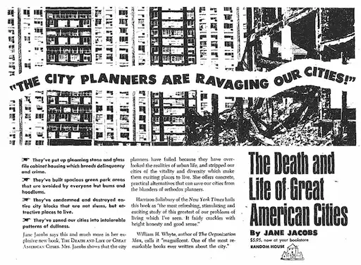
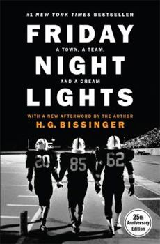

Ever since I started working and earning "adult money", I've been traveling the big cities of the United States, yet one of my very best trips was to a small town that was never on my radar: Beacon, New York. I traveled to Beacon for a weekend last fall, and it became a goodbye to the East Coast, as I was about to receive the job offer that caused me to move from Philadelphia to Seattle. It was one of the most pleasant weekends I can remember! I hiked to the top of Mount Beacon, my first-ever summit and a hike that was a perfect mix of challenging and accessible, and I enjoyed the charms of a walkable town about an hour and a half from New York City.
I used to live right by one of their locations in Philadelphia, and I swear it is the best cheesteak I have ever had (always a contentious debate in Philly), and more broadly just one of the best sandwiches I have ever had. I don't know how they do it.
Pad thai is one of my most consumed foods, because I have a recipe for it that, while not authentic, is very affordable -- definitely the tastiest meal I can make for that price. I make it often. According to Wikipedia, pad thai originated as a street food in Thailand in the 1930s - so it is less than 100 years old! However, it has quickly become overwhelmingly popular. Tofu, shrimp, and scrambled eggs are the typical protein sources used in pad thai recipes; however, other fish or meat are commonly added as well. The key ingredient in my recipe is fish sauce -- you need to have just the right balance so you can taste it, but it doesn't overwhelm you! My recipe doesn't use tamarind paste - that can be a difficult ingredient to find in stores! However, it is a key ingredient of the typical pad thai found at a restaurant. My recipe also doesn't use any sugar - which is often included in a restaurant pad thai! That is due to my own preference.
| The Picture of Dorian Gray | The Death and Life of Great American Cities | Friday Night Lights | My Brilliant Friend |
|---|---|---|---|
|  |  | ||
| Oscar Wilde | Jane Jacobs | H.G. Bissinger | Elena Ferrante |
| A book with themes of coming of age, guilt, and morality. It achieves a very rare feat: it remains not only poignant, but hilarious more than a century after its publication! I was so impressed at the way the humor translates for modern audiences. | The seminal book on city planning, which criticized the prevailing ideas in city planning at the time and changed the way the field was conducted forever. A central point is the importance of "eyes on the street", the idea that urban areas are safer when there is constant human activity and residents keeping an eye on things. As a city planner, the book has been a touchstone for me for years, but newly relevant as it has helped me understand the reasons why west coast cities can sometimes be frustrating compared to east coast! | The true story of a high school football team in a small town in Texas and the real-life stories intertwined with it. Themes include social class, perseverance, and the challenges of adolescence. I went to a high school in Illinois where our football team was a very big deal, and I covered the football team as a student journalist, so this book reminded me of that experience. | The realistic fiction story of two girls growing up in Naples, Italy, which happens to also be where many of my ancestors were originally from. It's an excellent portrayal of life in Naples in the late 20th century, as well as a coming-of-age story that shows the way close relationships evolve as you grow up. They experience the tough lessons of a childhood on 'the wrong side of the tracks', find themselves, and go through ups and downs in their relationship. There is a bit of magical realism involved. |